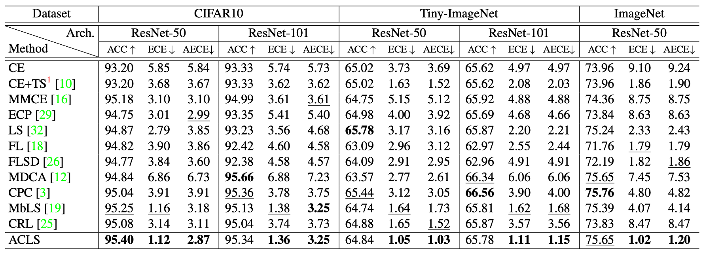

Abstract
We address the problem of network calibration adjusting miscalibrated confidences of deep neural networks. Many approaches to network calibration adopt a regularizationbased method that exploits a regularization term to smooth the miscalibrated confidences. Although these approaches have shown the effectiveness on calibrating the networks, there is still a lack of understanding on the underlying principles of regularization in terms of network calibration. We present in this paper an in-depth analysis of existing regularization-based methods, providing a better understanding on how they affect to network calibration. Specifically, we have observed that 1) the regularization-based methods can be interpreted as variants of label smoothing, and 2) they do not always behave desirably. Based on the analysis, we introduce a novel loss function, dubbed ACLS, that unifies the merits of existing regularization methods, while avoiding the limitations. We show extensive experimental results for image classification and semantic segmentation on standard benchmarks, including CIFAR10, Tiny-ImageNet, ImageNet, and PASCAL VOC, demonstrating the effectiveness of our loss function.
Results

Quantitative results on the validation split of CIFAR10, Tiny-ImageNet, and ImageNet in terms of the top-1 accuracy (ACC), ECE, and AECE. We compute the calibration metrics with 15 bins. Numbers in bold are the best performance and underlined ones are the second best.
We show in this table quantitative comparisons between our method with state-of-the-art network calibration methods on image classification. For CIFAR10 and Tiny-ImageNet, the numbers for the methods are taken from MbLS. For a fair comparison, we reproduce the results of MMCE, CRL, CPC, and MDCA with the same experimental configuration, including network architectures and datasets. For ImageNet, we reproduce all the methods in the table with ResNet-50. From the table, we can clearly see that ACLS outperforms all previous calibration methods by significant margins on all benchmarks in terms of ECE and AECE. In particular, we have three findings as follows: (1) ACLS outperforms the AR methods by large margins. MDCA and CPC penalize target labels using adaptive smoothing functions, but they often behave undesirably in terms of network calibration. ACLS addresses this limitation, providing better ECE and AECE, compared with the AR methods. (2) The CR method, MbLS, regularizes confidence values selectively. However, it does not penalize the target labels of predicted classes, outperformed by ACLS on all benchmarks. (3) ACLS alleviates the limitations of AR and CR, and it also surpasses CRL in terms of ECE and AECE.
Acknowledgements
This work was partly supported by IITP grant funded by the Korea government (MSIT) (No.RS-2022-00143524, Development of Fundamental Technology and Integrated Solution for Next-Generation Automatic Artificial Intelligence System, No.2022-0-00124, Development of Artificial Intelligence Technology for Self-Improving Competency-Aware Learning Capabilities) and the KIST Institutional Program (Project No.2E31051- 21-203).